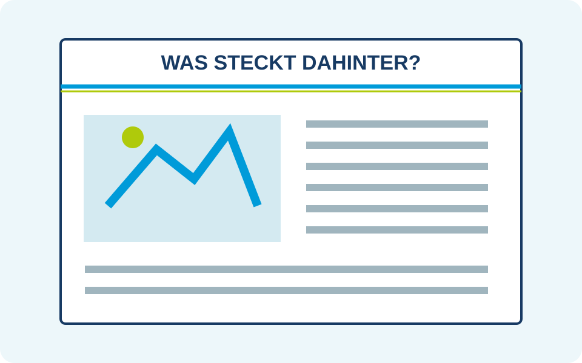

Handlungssituation

Was steckt hinter den verschlossenen Türen?
Der Mordanschlag von Sarajevo erreicht die europäischen Redaktionen. Die Regierungen beraten, Bündnispartner warten auf Signale, und jede Erklärung kann die Stimmung verändern. Ihr hört von Gesprächen, die anschließend anders dargestellt werden. Ein Dementi macht eine Geschichte erst interessant. Doch hinter einer auffälligen Beobachtung kann eine Absprache stehen – oder ein Missverständnis.
Eure Redaktion will die Zeitung herausbringen, über die alle sprechen. Ihr interviewt die Ländergruppen, verfolgt öffentliche Nachrichten und spürt möglichen Intrigen nach. KI unterstützt euch dabei, Geschichten zu entwickeln, Schlagzeilen zu schärfen und Artikel zu formulieren. Ihr entscheidet, welche Deutung ihr veröffentlicht und wie ihr Leserinnen und Leser gewinnt.
Ihr berichtet über das Spielgeschehen. Eure Veröffentlichungen können Regierungen unter Druck setzen, Verdacht wecken oder eine neue Sicht auf einen Konflikt eröffnen. Politische Entscheidungen treffen weiterhin die Ländergruppen. Was euch niemand mitteilt und was nicht öffentlich wird, kennt eure Redaktion nicht automatisch.
Zum Spielbeginn stehen die weiteren Entscheidungen noch offen. Eine KI kennt weder geheime Gespräche noch den künftigen Verlauf eures Spiels. Eure Zeitung kann deshalb zwischen Bekanntem, Vermutetem und redaktioneller Zuspitzung unterscheiden. Gerade die Frage, was hinter einer Nachricht stecken könnte, macht eure Rolle spannend.
Prüft eure Presserolle · Handlungssituation
Wählt jeweils die am besten begründete Antwort. Eine Antwort ist richtig.
1. Welche Aufgabe passt zur Rolle der Europäischen Presse?
Welche Aufgabe passt zur Rolle der Europäischen Presse?
2. Zwei Länder erklären sich öffentlich uneinig, wurden aber länger im Gespräch beobachtet. Was lässt sich daraus ableiten?
Zwei Länder erklären sich öffentlich uneinig, wurden aber länger im Gespräch beobachtet. Was lässt sich daraus ableiten?
3. Wie kann die KI euch dabei unterstützen, während des Spiels mindestens zwei Zeitungsausgaben zu veröffentlichen?
Wie kann die KI euch dabei unterstützen, während des Spiels mindestens zwei Zeitungsausgaben zu veröffentlichen?